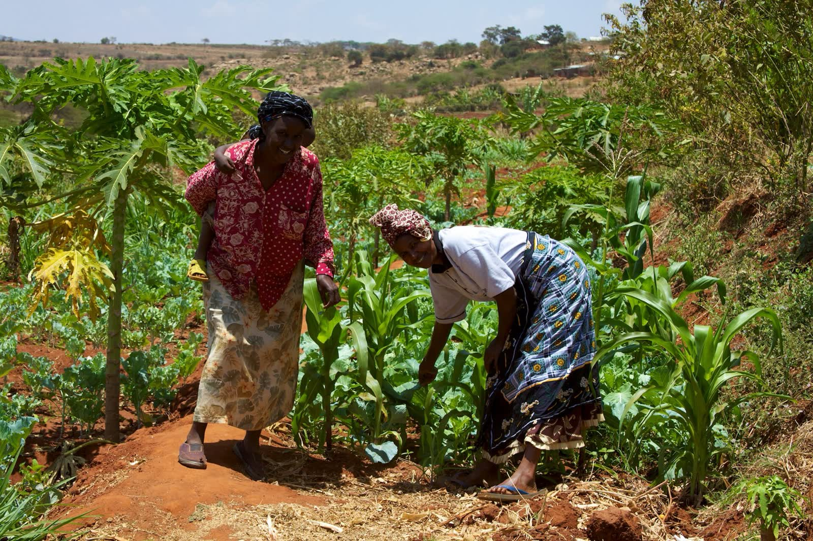
Los elefantes entran a los cultivos buscando alimento.
Las cosechas se dañan cuando la fauna y la agricultura comparten el mismo terreno.
Proteger la fauna sin dejar atrás a la gente.
¿En qué medida las personas de Kenia protegen sus ecosistemas naturales y, a la vez, mejoran su calidad de vida?
Desplázate para descubrir ↘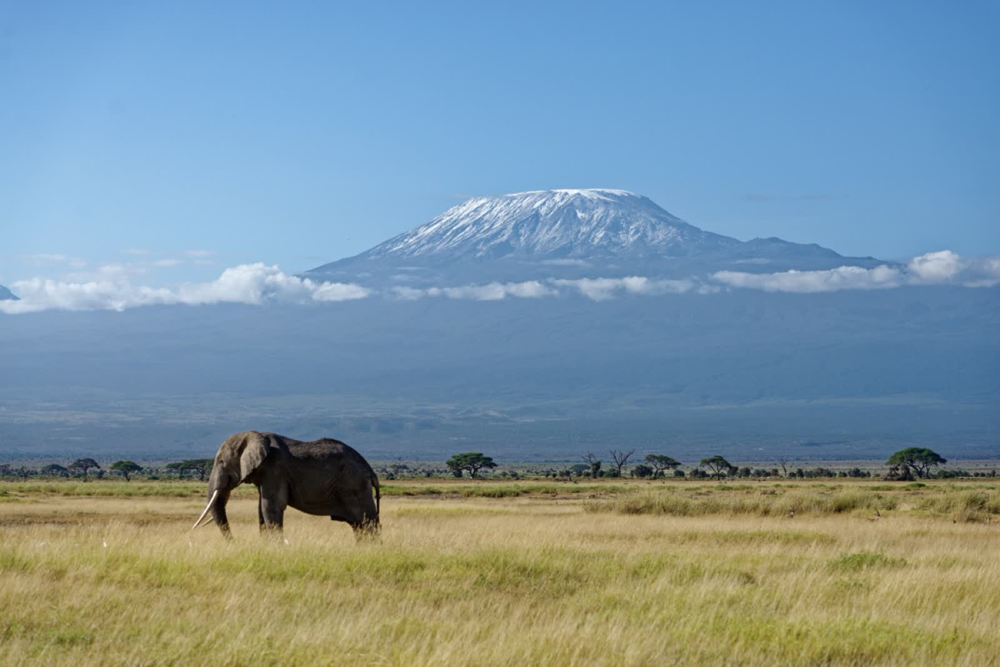
Emma Sánchez/Elan Morales/Ivanna Morales/Natalia Faibre/Andrea Montes de Oca/Alexandra Ahued/Paulina Ferreira/Claudiel Jiménez/Luis Domínguez/André Mundo/Ramón Velázquez/Alejandro Núñez/Mateo Jiménez/Mariana Camacho/Regina Torres/Andrea Calderón/Mia Tinoco/María Villegas/Valeria García/Arley Gómez/Valeria Benítez
Kenia está en África Oriental y la cruza la línea del ecuador. Limita con Sudán del Sur, Etiopía, Somalia, Uganda y Tanzania, y tiene costa en el océano Índico.
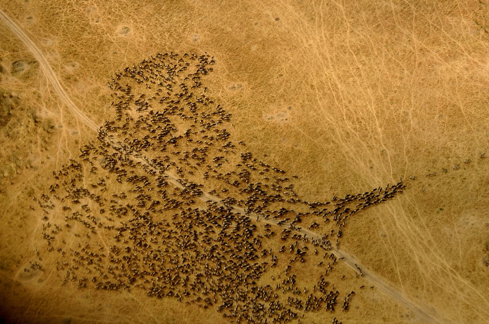
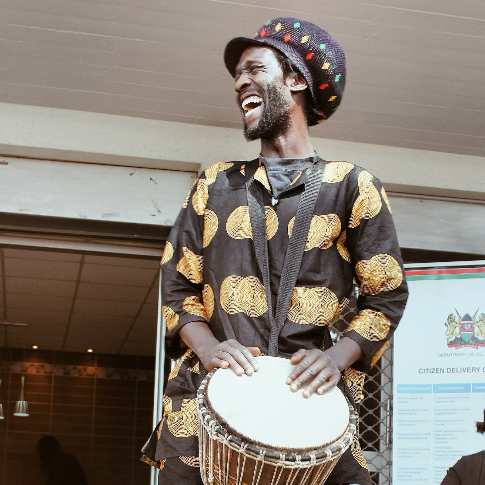
Es una tradición espiritual de la comunidad Daida (Taita). El ritual busca sanar enfermedades, purificar el cuerpo y la mente y fortalecer la unión de la comunidad.
Tambores sagrados, cantos rítmicos y movimientos intensos llevan a un estado de trance asociado con la sanación y con liberar tensiones comunitarias o ambientales.
Las especies necesitan grandes extensiones de territorio, pero esas mismas tierras se usan para agricultura, ganadería, viviendas y otras actividades humanas. El resultado es un conflicto entre las personas y la fauna, sobre todo alrededor de parques nacionales, reservas y áreas de conservación comunitaria.
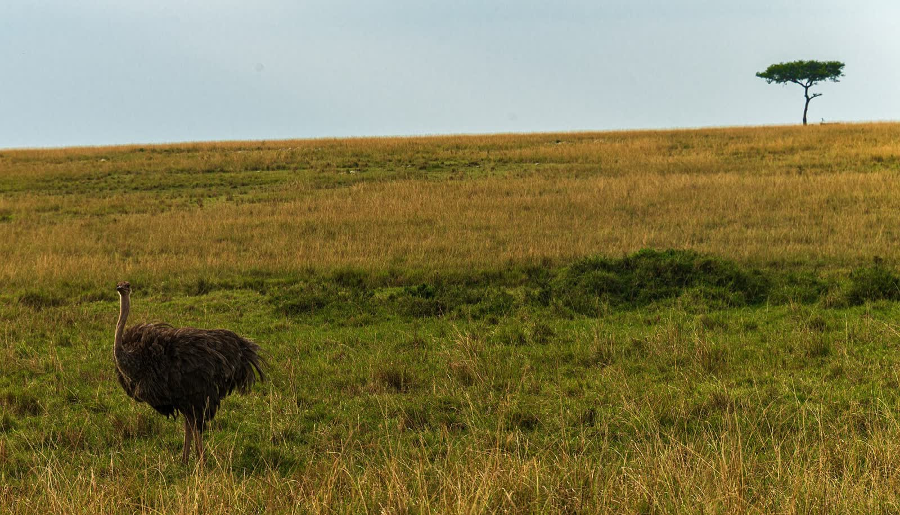
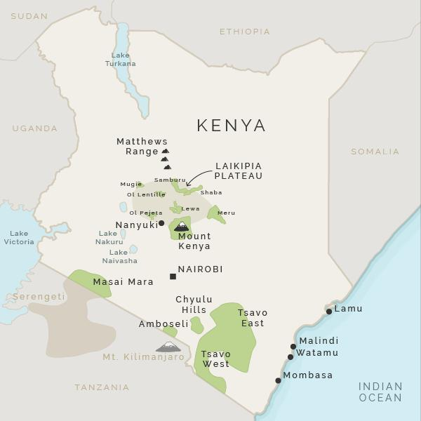
de la fauna de Kenia vive fuera de parques nacionales y reservas. Las tierras de comunidades y propietarios son clave para conservar las especies.
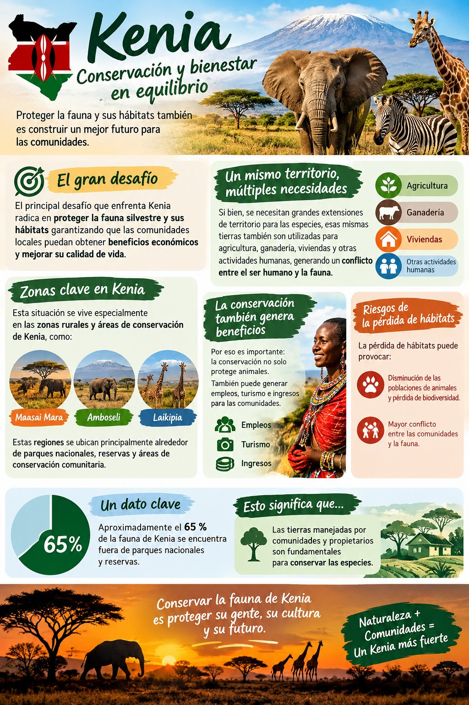
de su fauna silvestre se ha perdido en las últimas décadas.

Las cosechas se dañan cuando la fauna y la agricultura comparten el mismo terreno.
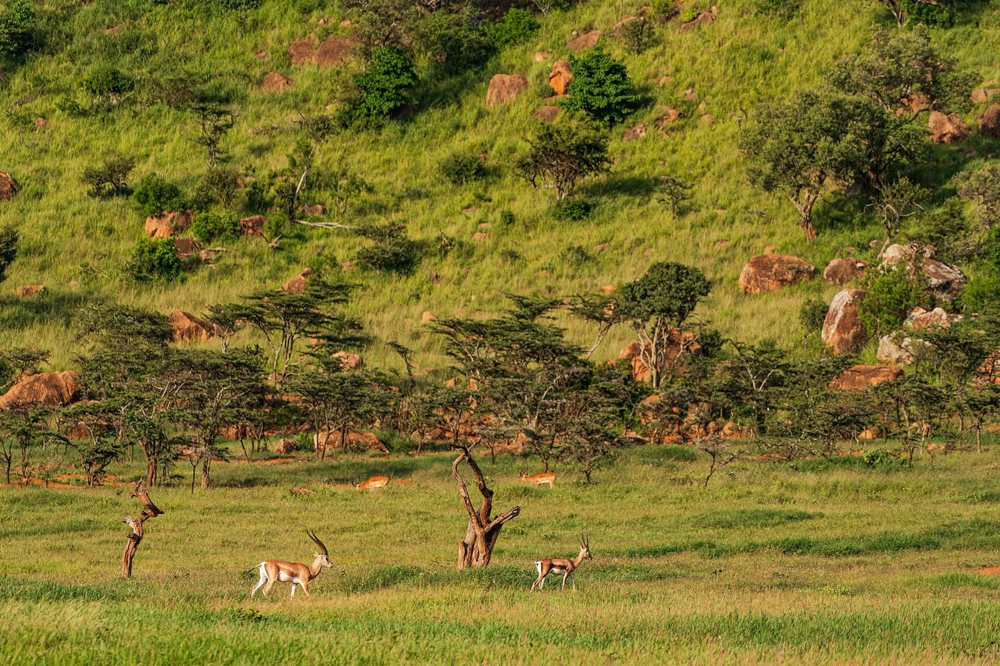
La conservación comunitaria genera ingresos para las familias que viven cerca.
¿Cómo pueden las comunidades usar sus tierras sin perjudicar los hábitats naturales?
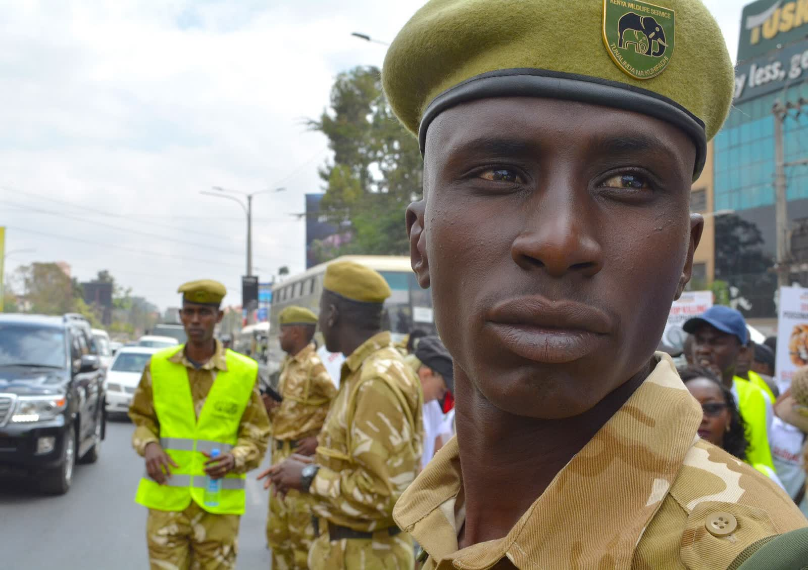
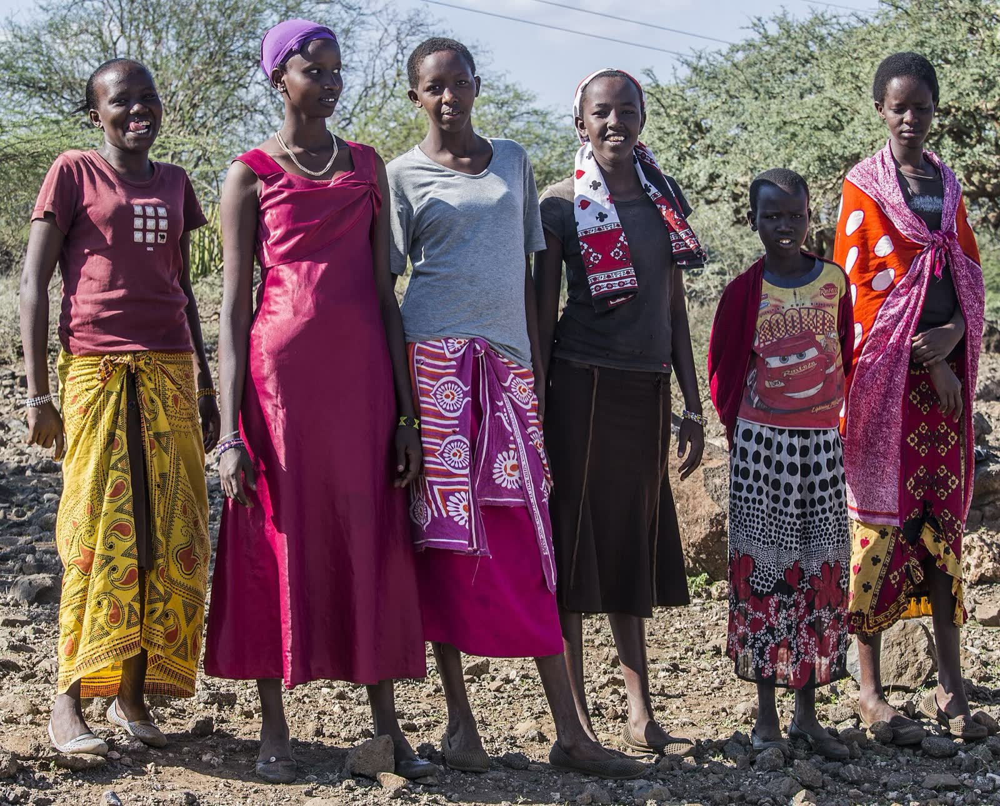
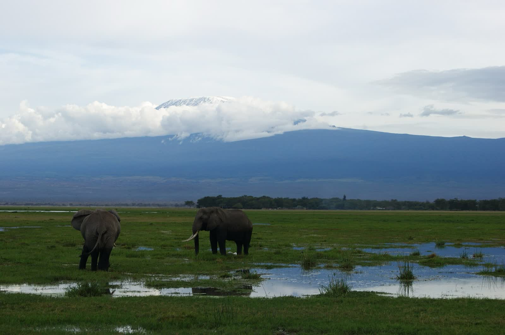
Etnias como los masái tienen un interés histórico en conservar su entorno: su cosmovisión y su orgullo cultural están ligados a convivir con la fauna silvestre, y buscan beneficios tangibles del ecoturismo.
El Gobierno de Kenia y otras asociaciones aplican respuestas específicas a las crisis de conservación provocadas por el conflicto entre humanos y animales en todo el país.
En Kenia existen áreas de conservación comunitaria que protegen la vida silvestre y, al mismo tiempo, generan oportunidades económicas para quienes viven cerca. En México pasa algo parecido en las comunidades cercanas a áreas naturales protegidas.
Buscan rentabilidad y generar empleo, con el reto de garantizar salarios justos y condiciones laborales dignas.
Prioriza el desarrollo económico del país.
Defienden con firmeza su territorio, su cultura y su seguridad.
Proponen corredores biológicos, proteger hábitats, educar a las comunidades y promover el ecoturismo sostenible.
Reducir los conflictos entre humanos y animales, proteger la naturaleza y mejorar la calidad de vida de las comunidades.
El gobierno busca desarrollo económico, los masái defienden su territorio y su cultura, y las organizaciones priorizan la fauna.
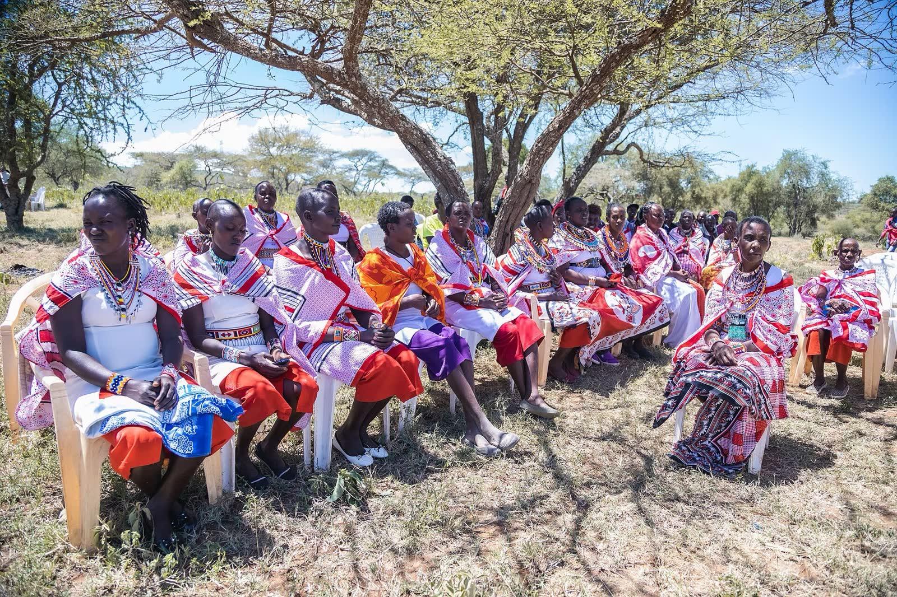
El dilema es encontrar un equilibrio entre proteger a los animales y garantizar la seguridad, el territorio y los recursos de las personas.
Ramón, Alex, André, Mateo y Luis
Una campaña de concientización sobre la importancia de conservar la fauna y los beneficios económicos que el turismo responsable puede dar a las comunidades. Si las personas conocen el problema y reciben beneficios, tendrán más motivos para proteger a los animales.
Las zonas más afectadas y las necesidades de sus comunidades.
La campaña de concientización.
Organizar actividades de conservación.
Medir los resultados obtenidos.
Computadoras, acceso a internet e información sobre la fauna de Kenia.
Falta de financiamiento, poca participación de las comunidades y difícil acceso a zonas alejadas.
Número de participantes y encuestas para comprobar si aumentó el conocimiento sobre conservación.
Conocer el problema y recibir beneficios económicos motiva a involucrarse.
Una campaña con infografía, video corto y carteles.
Una escuela internacional también es una comunidad de culturas.
Conocer Kenia nos permite aprender sobre sus tradiciones, su historia, su biodiversidad y la forma de vida de sus habitantes. Como escuela internacional, Noordwijk promueve el conocimiento y el respeto por otras culturas, y nos ayuda a comprender mejor el mundo y a valorar la diversidad cultural.
Una campaña para mostrar por qué conservar la fauna importa y cómo el turismo responsable puede beneficiar a las comunidades locales.